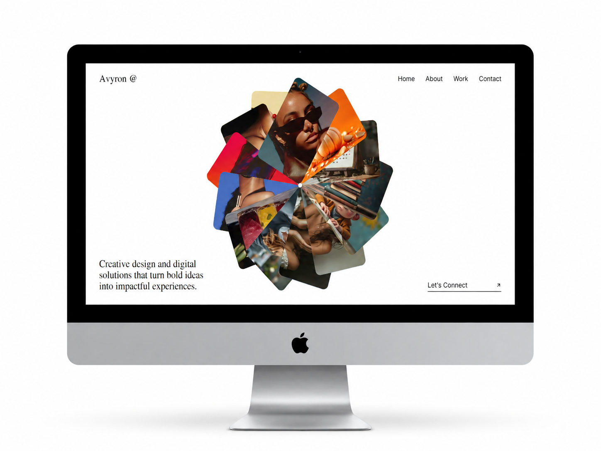

UI/UX
Avyronpro
2026
Avyronpro wurde mit einem klaren Fokus auf Kreativität, Übersichtlichkeit und visuelle Wirkung entwickelt. Das Konzept bietet eine prägnante Bühne, um Kompetenzen, Leistungen, den kreativen Prozess und ausgewählte Projekte in einem klaren, ansprechenden Erlebnis zu präsentieren.
Die Startseite schafft mit ausdrucksstarker Typografie, modernen Layouts, fließenden Interaktionen und sorgfältig strukturierten Abschnitten einen starken ersten Eindruck. Eine eigene Work-Seite bietet Raum, ausgewählte Arbeiten fokussiert zu zeigen.
Projekt ansehen